SANTA CLAUS IS COMING
Image heavy post. Sanda is a shonen by the person who made Beastars, so expect violence and weird nudity.
The video announcement for Sanda was released! I've been re-reading it in anticipation. Here's some panels that I'm very excited to see animated, starting with the first Sanda vs. Ooshibu fight. Ooshibu is an absolute freak and I cannot wait for Science SARU to get their hands on him.
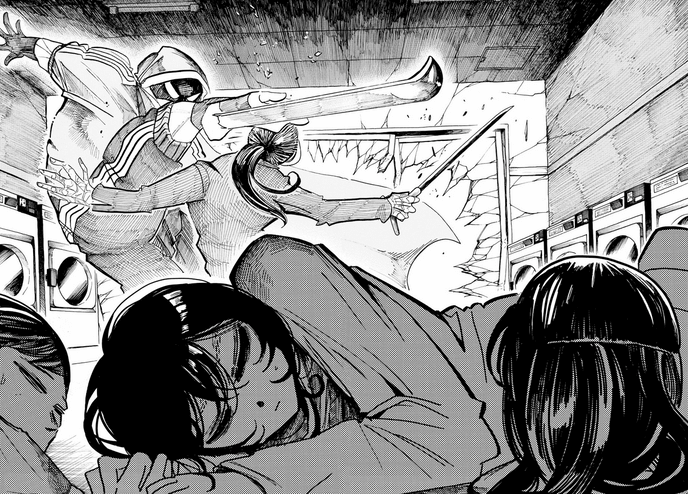 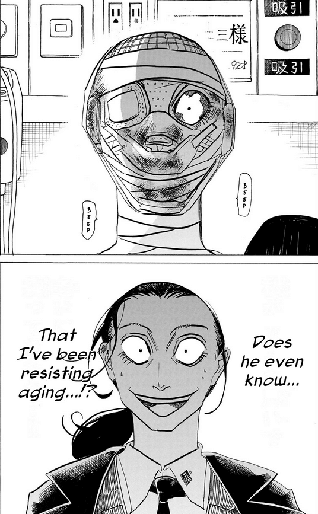 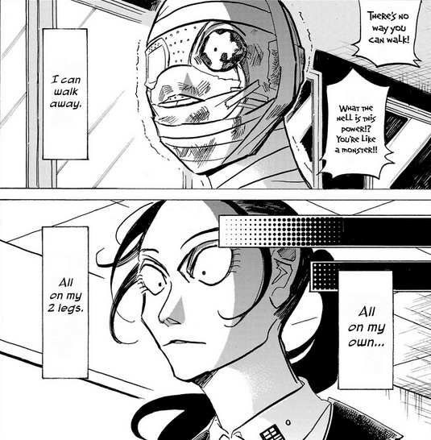 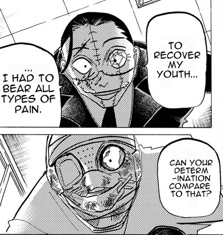 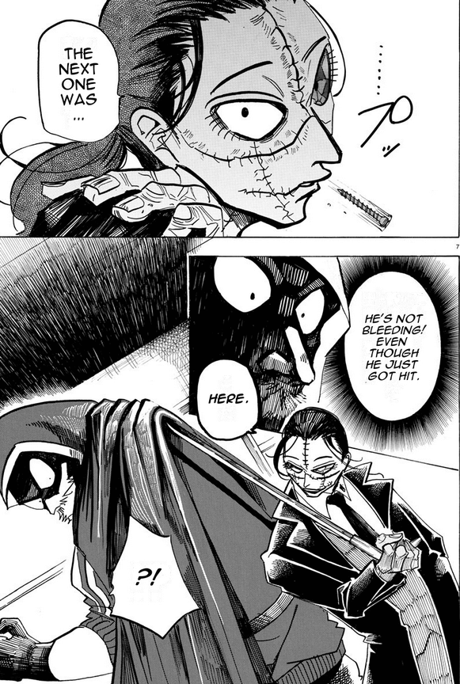There's snippets of this scene in the teaser, but even when I put the video at the highest quality, I can't get many clear shots of him. (Apparently everybody else watching this was thinking the same thing. Just thought that was funny.)
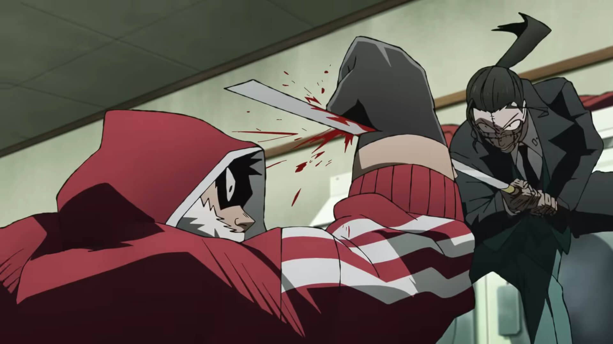 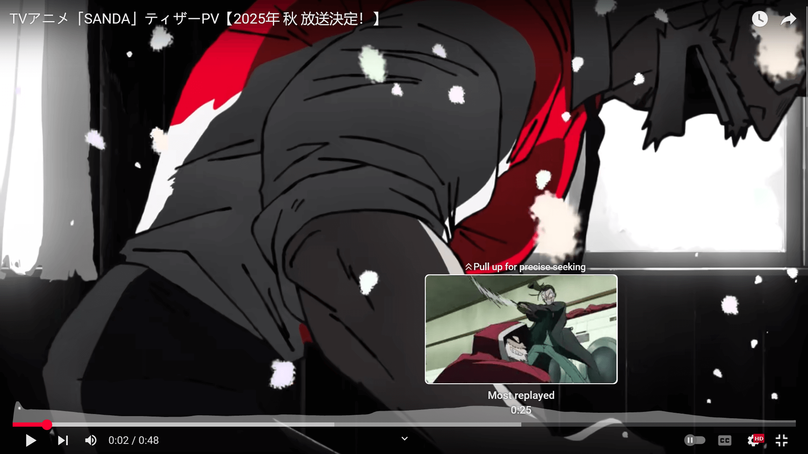Namatame's another favorite villain of mine. She kind of gives off the same vibes as Melon Beastars, but written much, much better.
 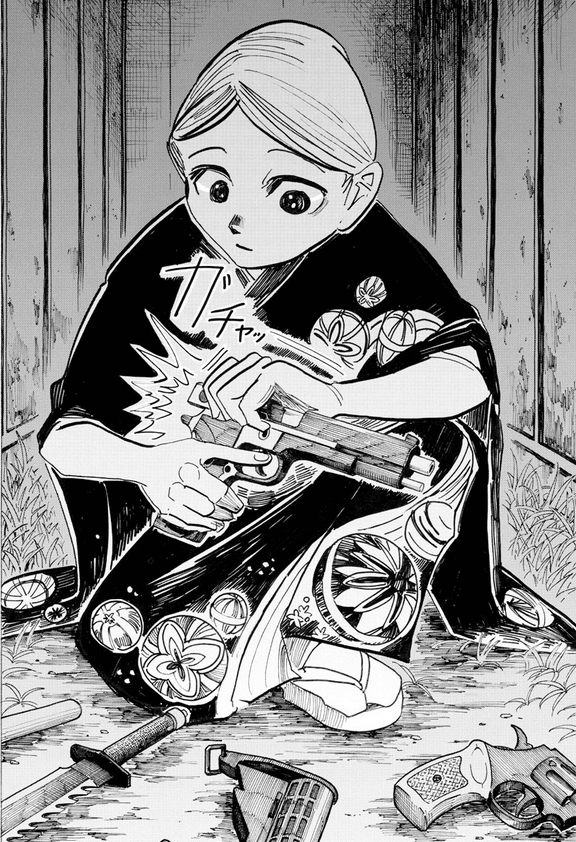
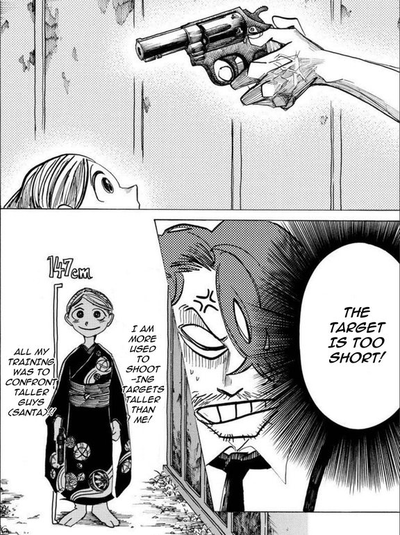
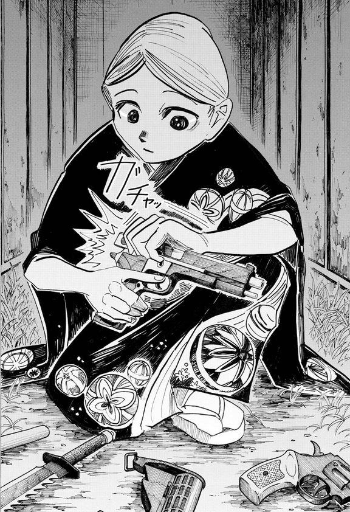
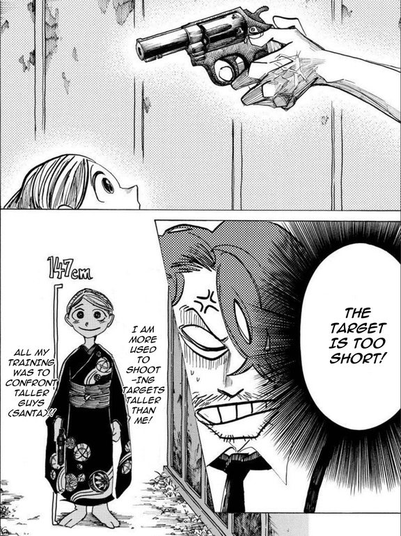
Her backstory with her mom will change lives, I feel.
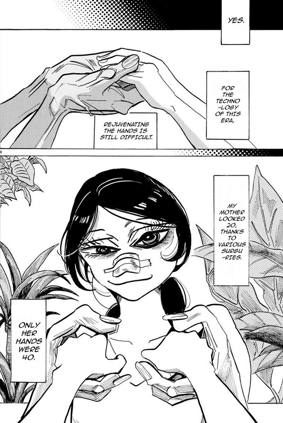And... more Ooshibu again. What can I say. I love it when villains are off-the-shits crazy.
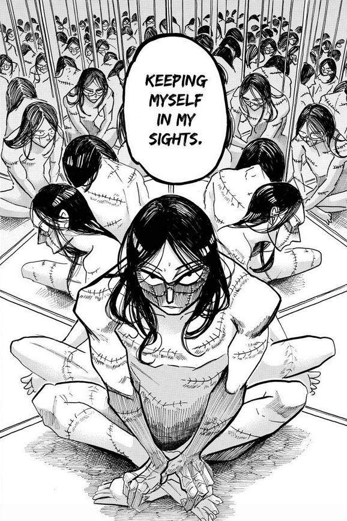 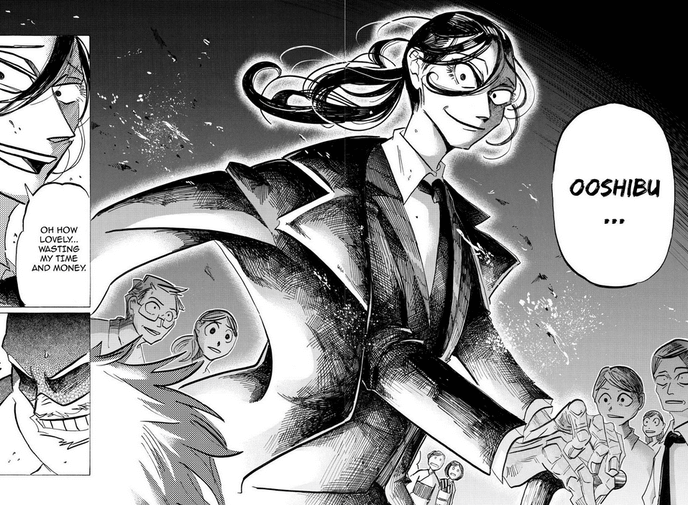 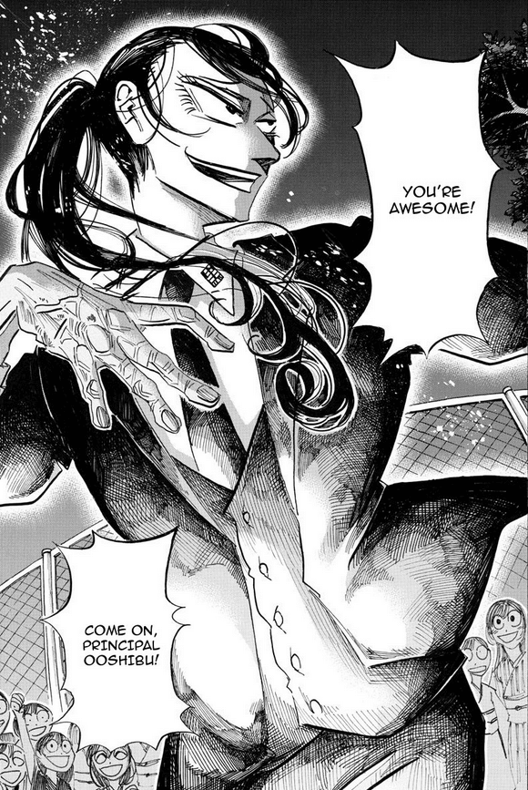 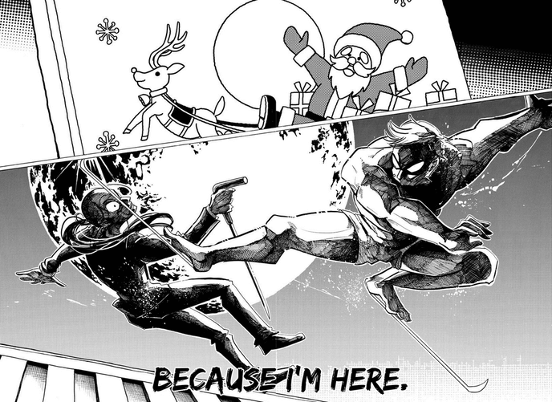There's a distinct lack of good guys on this page, but in my defense, we got a lot of beautifully animated views of Sanda and Fuyumura in that PV. But not Amaya! Here's one of my fav Amaya and Sanda panels.
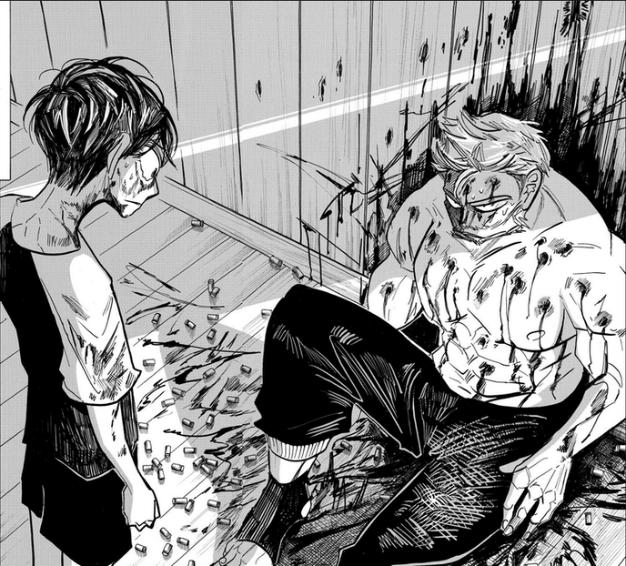Here's the Amaya and Yagiuda panels that made it in.
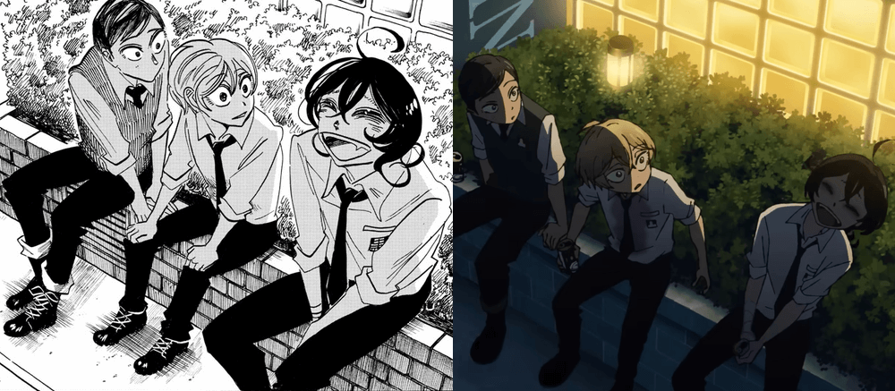 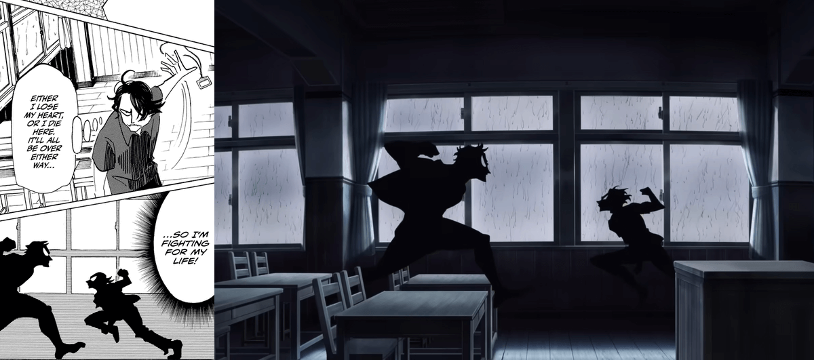 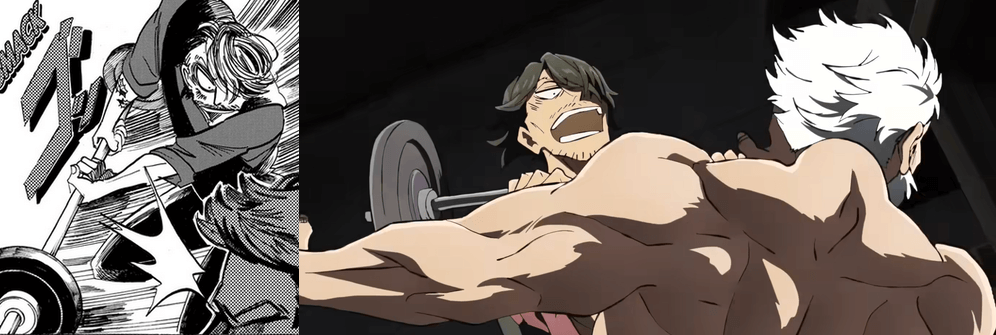Just for fun - some silly background events I need to see.
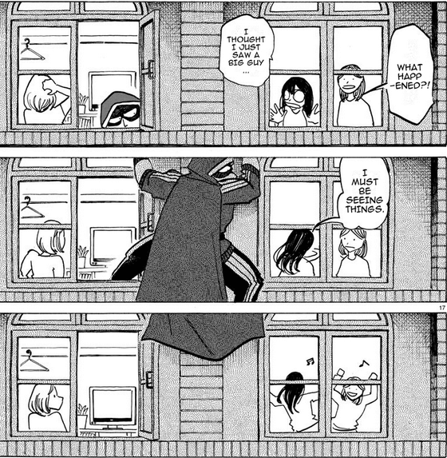LEGOSHI JUMPSCARE
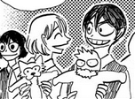You can find the first 90-something chapters on MangaDex. If you want to read ahead, the translators have the raw scans posted with the script on their Discord.